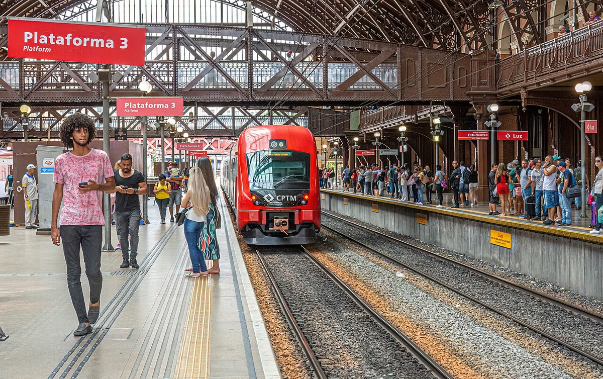

Brasil · 28 de outubro
Ferrovia do interior começa a operar em fase de testes
Trecho de 84 km liga Vale Verde a Serra Alta; viagem de ônibus de duas horas cai para 48 minutos.

A Ferrovia do Interior começou a operar em fase de testes nesta quarta-feira (28), com uma composição que saiu da Estação Central de Vale Verde às 6h20 e chegou a Serra Alta 48 minutos depois. O percurso de 84 quilômetros substitui, em condições ideais, uma viagem de ônibus que dura cerca de duas horas.
Por enquanto, só passageiros convidados e equipes técnicas podem embarcar. São quatro viagens por dia em cada sentido, com paradas em Vila Nova, Rio Claro, Campo Belo e Serra Alta. A operação assistida vai até dezembro; a venda de bilhetes começa em janeiro, se os testes de segurança forem concluídos.
Menos tempo, mais estações
O projeto prevê seis estações e integração com 14 linhas de ônibus. A passagem deve custar R$ 9,80 na tarifa comum, com gratuidade para estudantes da rede pública e desconto de 50% para idosos. Os trens têm 240 lugares, ar-condicionado, tomadas, espaço para bicicletas e dois vagões acessíveis.
A obra consumiu quatro anos e teve atrasos por causa de desapropriações e da travessia do Rio Claro. A engenheira-chefe Marina Duarte explica que o trecho mais delicado foi a ponte de 620 metros sobre a represa. “Tivemos de trabalhar em horários de menor movimento e monitorar a qualidade da água todos os dias”, disse.
“A ferrovia não resolve tudo, mas devolve ao interior uma ligação que havia sido perdida nos anos 1990.”
Marina Duarte, engenheira-chefe do projeto
Carga e desenvolvimento
Além dos passageiros, o ramal terá operação de carga em horários alternados. A expectativa é transportar 1,2 milhão de toneladas por ano, sobretudo alimentos, cimento e equipamentos. Um estudo da Universidade Estadual de Vale Verde calcula redução de 38% nas emissões por tonelada transportada em relação ao caminhão.
Comerciantes de Serra Alta comemoram, mas cobram melhorias no entorno das estações. A prefeitura promete calçamento, iluminação e bicicletários até março. “A estação não pode ser só um lugar de passar; precisa ser um lugar seguro”, disse a comerciante Neide Barros, que tem uma padaria a 200 metros da plataforma.
A operação plena está prevista para março de 2027, quando os trens novos chegam. Até lá, os testes serão acompanhados por técnicos do governo estadual e por uma comissão de usuários.